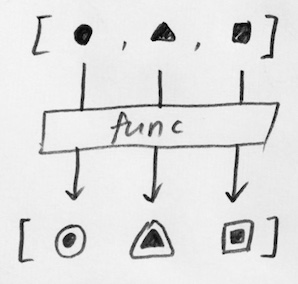
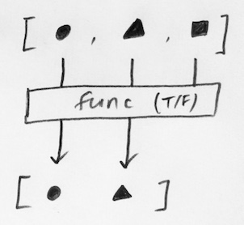
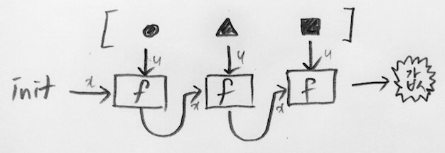

• 속도도 빠른데다 코딩길이도 확연히 짧아짐
• map, filter : 각자 고유한 obj 타입으로 나와서 list로 변환하지 않으면 볼 순 없지만, for등에는 쓸 수 있음
① map(function, iterable)
• lambda와 마찬가지로 anonymous function. 단 lambda와 달리 여러개의 arg를 받을 수 있음 (iterable)
• apply function to iterable, return collection of returns (as map obj)

역시 list 로 바꿔주는 게 좋은 거 같긴 한게, 다음과 같이 할 때 max 에서 이유 없이 에러남...
②
filter(predicate function, iterable) • iterable 을 predicate function (t/f를 반환하는 함수) 에 넣어서 true 인 경우만 묶어서 돌려준다

③
reduce(function, iterable, initializer)
• arg가 2개 있는 function(x,y)에 대해서만 적용가능
• function(x,y) 에서 x는 이제까지의 return 값, y는 iterable이 하나씩 들어감
• 처음에 들어갈 x값은 initializer가 없으면 iterable의 첫번째 element로 함
• map, filter와 달리 functools 에서 임포트 필요
• initializer 는 keyword 방식이 아니라 positional 방식으로 넘겨줘야 함
